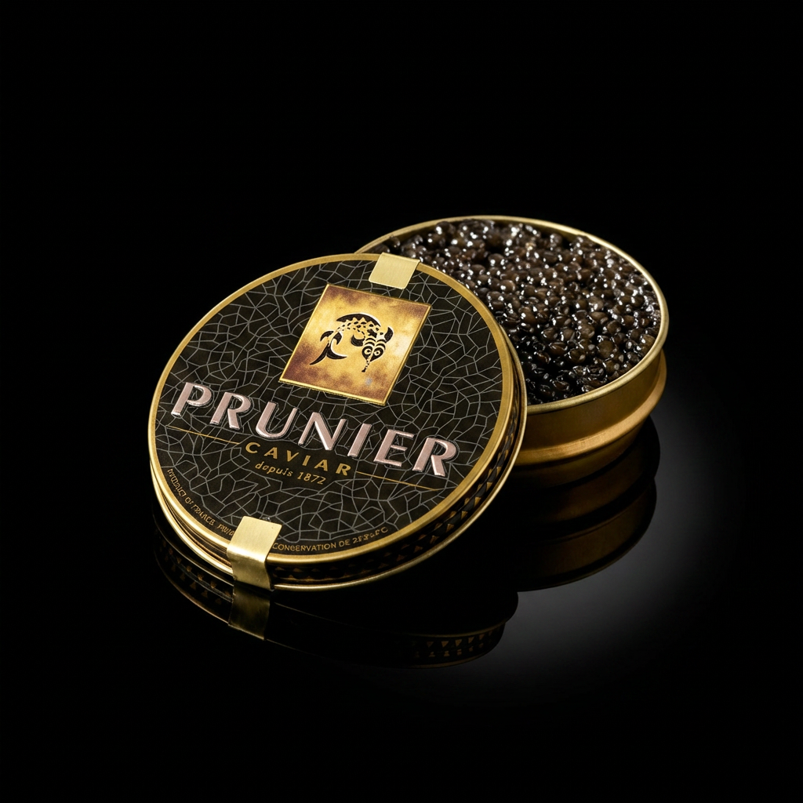
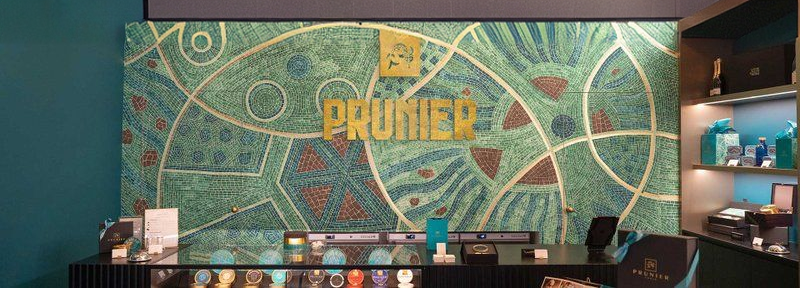
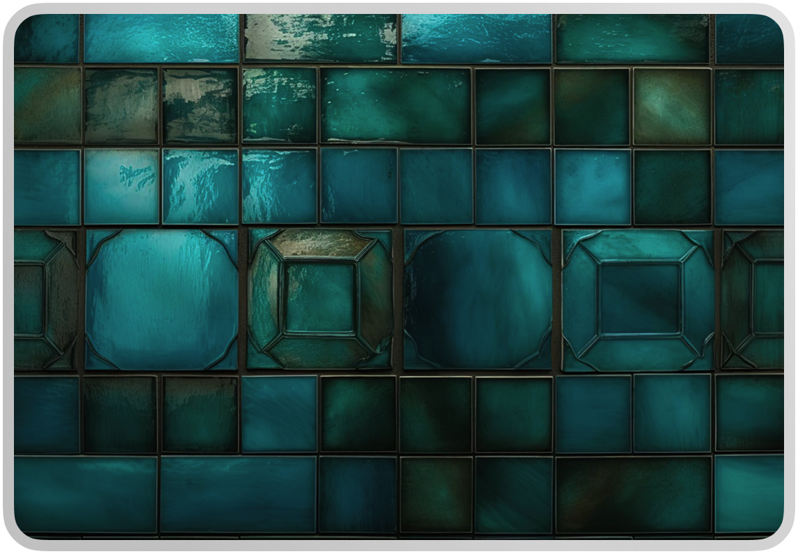
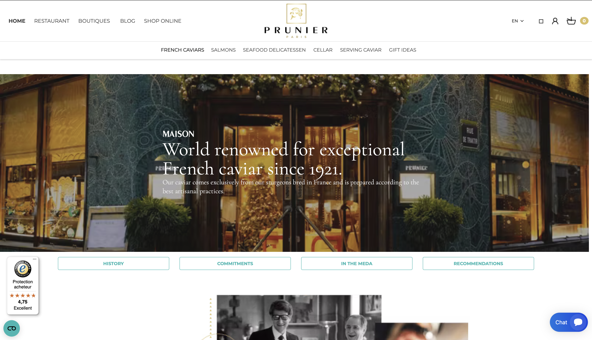
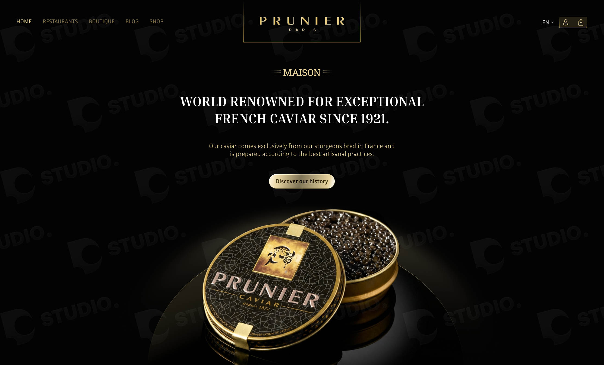
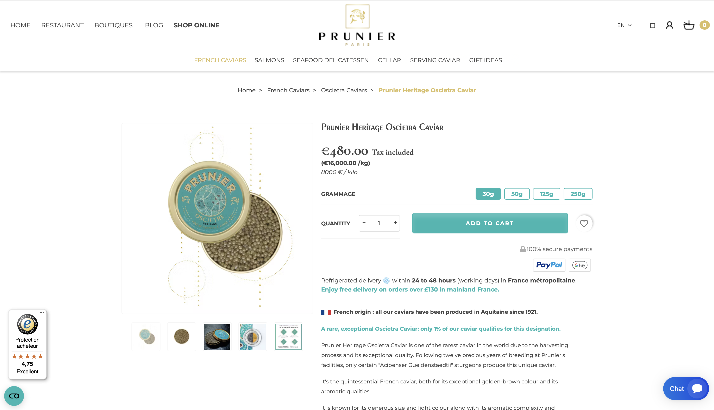
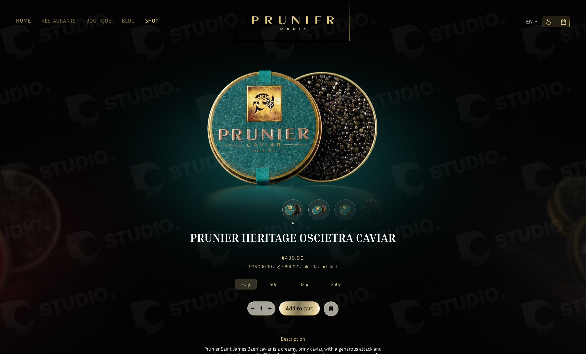

Analyse de l'interface, de l'expérience utilisateur et de l'architecture technique de la Maison Prunier.

La Maison Prunier est une institution française de la gastronomie de luxe fondée en 1872. Pionnière du caviar français depuis 1921, elle produit en Aquitaine un caviar d'exception reconnu mondialement. La marque rayonne à travers 40 points de vente premium dans le monde, des boutiques historiques de Paris à Tokyo, et exploite un restaurant Art Déco classé aux monuments historiques avenue Victor Hugo. Votre cible attend une expérience digitale cohérente avec le positionnement de la Maison : clarté, fluidité, codes visuels maîtrisés. Cet audit évalue l'interface et l'architecture technique de Prunier sous cet angle.
L'analyse de l'interface et de l'architecture technique du site actuel fait ressortir deux axes principaux sur lesquels concentrer la réflexion.
La marque dispose d'éléments forts : le turquoise hérité de la façade classée, l'or du logo, des polices serif élégantes. Cependant, la coexistence de ces éléments n'est pas encadrée par des guidelines claires. Trois familles serif chargées simultanément (Cormorant Garamond, Cormorant, Prata), plusieurs déclinaisons d'or non harmonisées. Sans cadre d'utilisation structuré, le résultat ne reflète pas toujours le niveau du produit.
La partie boutique en ligne du site tourne sur PrestaShop 1.7.8.11, une version qui n'est plus maintenue de manière prioritaire. Thème générique habillé via un builder Elementor, pipeline de build absent, nombreux scripts tiers non différés. L'ensemble pèse sur la performance et la maintenabilité.
La marque porte des éléments visuels forts mais leur utilisation varie d'une page à l'autre. L'absence de guidelines structurées ne permet pas de garantir une lecture cohérente du positionnement premium.


La marque n'est pas à refaire, elle porte un héritage fort. L'objectif est de la structurer en fournissant des guidelines claires pour l'ensemble des supports et des futures créations.
Définir des règles d'utilisation claires pour chaque élément de la marque : quand utiliser le logo en or, quand le décliner en monochrome, quelle famille serif pour les titres vs le corps de texte, comment le turquoise et l'or coexistent selon le support. Un cadre qui préserve l'identité existante tout en garantissant que chaque déclinaison reflète le positionnement premium du produit.


La fiche produit actuelle, dense, générique et peu engageante, est l'un des principaux points de friction du parcours d'achat. Une refonte sur-mesure la transforme en vitrine de la qualité Prunier.


Abandonner PrestaShop 1.7 au profit d'une architecture headless : Shopify Plus ou Shopware 6 gère le commerce (produits, stock, panier, paiements), Next.js développe une vitrine entièrement sur-mesure qui communique avec le back via API.
Design libre sans contrainte de thème. Animations, transitions, expérience sur-mesure, PageSpeed 95+, HTML divisé par trois vs plateforme actuelle.
Fin de la dépendance à une version PrestaShop en fin de vie. Stack moderne maintenue, sécurité à jour, écosystème d'agences mature.
L'architecture headless prépare les évolutions futures sans refonte lourde : nouvelles langues, nouveaux marchés, intégrations tierces.
Option
Repenser l'Espace Entreprise, non pas comme un portail de commande, mais comme une vitrine B2B premium : valoriser l'offre pro, mettre en scène les partenariats (hôtellerie, restaurants étoilés, événementiel), faciliter la prise de contact qualifiée. Une option à arbitrer selon la stratégie commerciale de la Maison.
Cet audit identifie deux axes principaux d'évolution pour le site de la Maison Prunier : la structuration de l'identité visuelle via des guidelines claires et la modernisation de l'architecture technique. Nous restons à disposition pour approfondir ces points.
contact@dstudio.company · D-Studio, 7 rue Lauriston, 75016 Paris